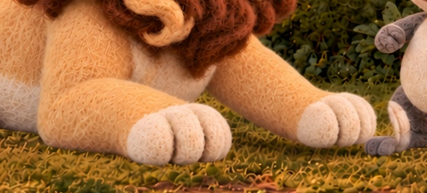
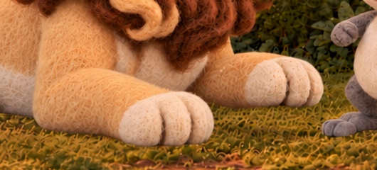
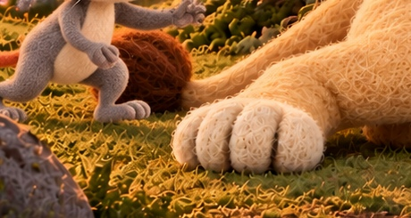
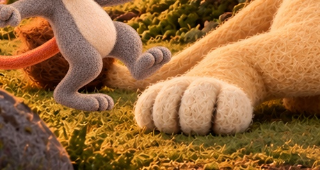
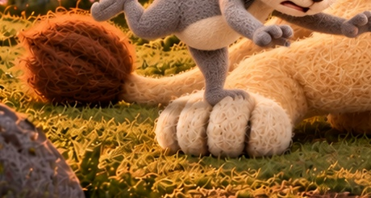
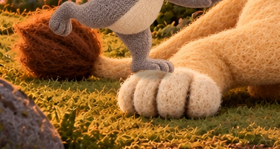

S01–S08 technical reconciliation
Review evidence only. Selected PNGs unchanged. Diagnostic boxes are not approved edit masks. Four S08 semantic-alias conflicts corrected to direct selected uses; remaining 2 S01 gaps preserved.
descending: S06-L002-B01-I02_front_paw_descending_r007_candidate.png
Classification: changed_pixels; exact locked background not preserved. Dimensions [1672, 941] vs [1672, 941]. Changed outside diagnostic support: 1,444,364. No approved final edit mask exists; this count is not an allowed-mask verdict.
d2c80afc4b33387fadad5dd2d51836168725f62fae2079d03afab5643e6044c0Approved


ready: S06-L002-B01-I01_front_paw_ready_r007_candidate.png
Classification: changed_pixels plus width/registration uncertainty. Dimensions [1671, 941] vs [1672, 941]. Changed outside diagnostic support: 1,443,996. No approved final edit mask exists; this count is not an allowed-mask verdict.
b91112d67facfbd833acb59211fa6e26edc9c0040295f9c6a9f569292b187c1cApproved


scramble: S06-L001-B02-I01_scramble_descent_r012_candidate.png
Classification: changed_pixels; exact locked background not preserved. Dimensions [1672, 941] vs [1672, 941]. Changed outside diagnostic support: 1,351,989. No approved final edit mask exists; this count is not an allowed-mask verdict.
21415af203daa4ef7bb2e277288a320487a26d1441a018c58e517e5b2522e44cs08: S08-L016-B01-I01_single_gentle_clear_r005_candidate.png
Classification: changed_pixels; exact locked background not preserved. Dimensions [1672, 941] vs [1672, 941]. Changed outside diagnostic support: 1,279,051. No approved final edit mask exists; this count is not an allowed-mask verdict.
9e7bcdfc41a909f86379f65fdfd2fda4f12ce84286679d831cbb4d428d368b8aS01 chronology: whole acorn → tiny contact → tasted
I01/I02 are earlier pickup coverage, not contact substitutes. Recommend a distinct contact use after I03 and before I04; do not renumber historical keys. Owner decision: show pickup (needs real start/held images) or explicitly cover pickup offscreen and begin at I03. No plan waiver or contact-slot insertion performed.
S05 rear-paw contact: selected evidence
The contact-labeled I02 shows the advancing foot beside/above the rear paw without a visible arrested/hooked overlap; pitch I03 places a foot on top of the paw. The sequence suggests stepping onto it, not a clearly depicted snag. Cause: poor contact visibility / ambiguous staging, not metadata or registration. No pixel-only technical correction proves collision.
S05-L008-B01-I01

931524d8d9fe60d0eeb4415311254078337118f1a86ecfde781df35e820429f9S05-L008-B01-I02

f0fc9cea1bfec97584e6e4b62919b0be8b6a6e71e636494bbf6c58d8c862efe6S05-L008-B01-I03

7d2559b53235c113132a5fe922d8866994c42c337f52da664bdd0a6d4889426bS05-L008-B01-I04

a7f5009ae8040b97239c5bed9a00544ef97e811eb75e7cd1970a038a896ab7e7Decision table and S05 GPT handoff · Registration/width measurements · Updated use matrix